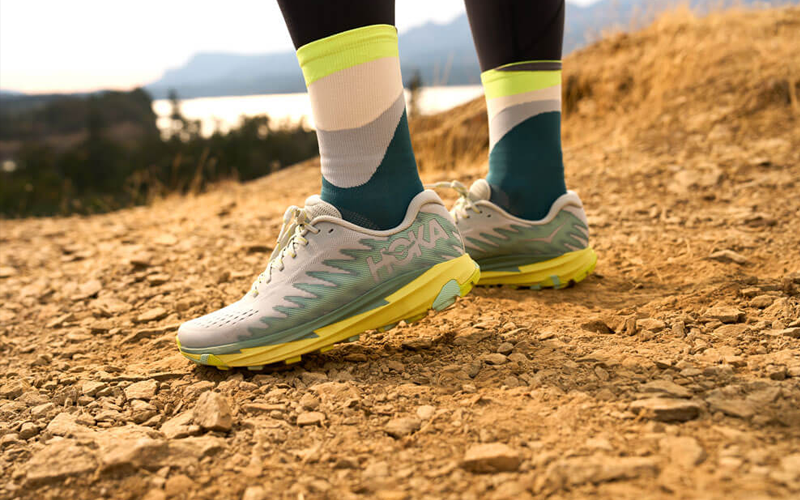
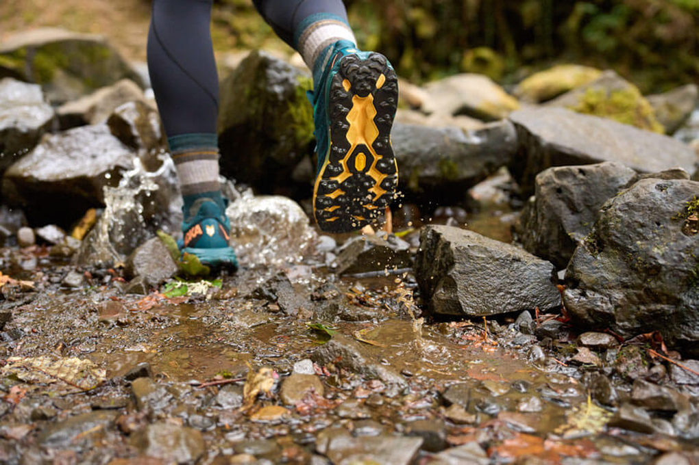
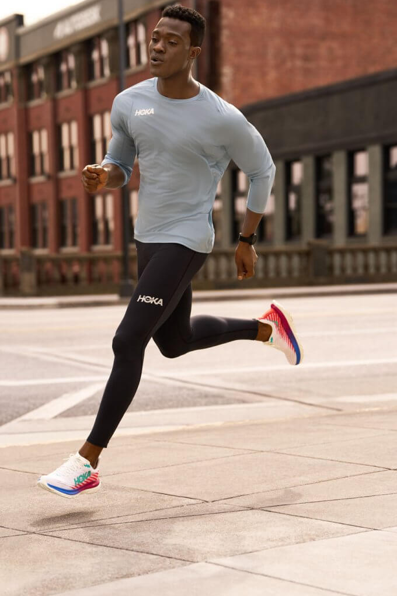
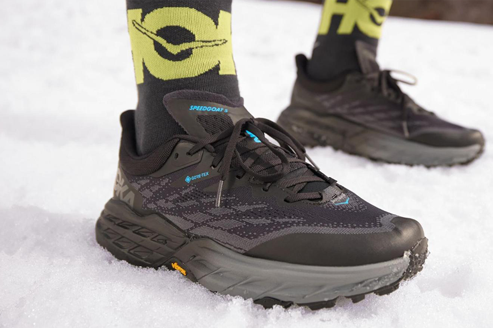

How to Winterize & Weather-Proof Your Running Shoes
Don't let the rain, sleet or snow stop you from hitting the pavement for a winter run. Get ideas on how to winterize and weather-proof your HOKA shoes.
-

Torrent 3
Winter weather is here, but that doesn't mean your outdoor runs need to end. Running safely in cold weather just means different preparations. Here are a few quick tips to get you started:
- Wear layers so you can remove a jacket when needed. Try to underdress by a few degrees because your body temperature will increase after you start running.
- Avoid wearing cotton because this fabric absorbs moisture. Instead, opt for dry fit or dry weave labels and wool-synthetic blends.
- Stick to running on cleared sidewalks and paths.
- Instead of sprinting, try endurance running. The slower pace of long-distance running will decrease your chances of slipping on icy patches. Plus, it could help build your overall endurance.
-
Challenger 7
Use a Wax Treatment to Waterproof ShoesThis method allows the wax to seep into every microcavity of the shoe. Materials list: waterproof wax, soft brush, hairdryer, water
- Use a soft brush to apply the wax to a small part of the running shoe.
- Using the same soft brush, rub in the wax thoroughly. Put some extra wax on high-friction areas, like the heels, toes, laces and tongues.
- You may see some discoloration, but it will disappear after the process.
- Melt the wax using the hairdryer. With enough heat, the wax will melt and seep inside every microcavity.
- Wait for the wax to harden. This will create a protective layer around the running shoe. At this point, any discoloration from the wax will disappear.
- Test the effectiveness of the wax. Pour some water directly onto the treated area. If it rolls right off, the waterproofing works.
-

Speedgoat 5 GTX
Wear Silicone Shoe Covers on Running ShoesFor a less permanent solution, shoe covers are the way to go. They're a simple and convenient way to upgrade your shoes in the winter. You can easily slip them on before your run and remove them afterward. Look for silicone shoe covers with traction on the bottom for support.
Traction for Running ShoesYou can use a traction attachment for runs on potential snow and ice. Yaktrax makes some excellent models. Just slip them onto the soles of your running shoes to get a good grip in winter's slippery conditions.
For a DIY option, you can put sheet metal screws on the bottom of your shoes. This is likely the cheapest and most simple traction option. However, the steel screws will wear down quickly, especially if you leave the trail to run on bare pavement.
A stronger option is to use screws made of tungsten carbide. It's the same material used to make machine-grade cutting tools so you know it can hold up. You may also recognize it from other winter-weather solutions like studded snow tires or the tips of trekking poles.
-

Check out HOKA's selection of apparel and outwear for both men and women.
Before you head out on your first frosty run, make sure your shoes are ready. HOKA has winter weather-ready shoes or use the steps below to waterproof and weatherize your usual road running shoes. HOKA has shoes for women and men that will make your winter runs a delight.
Here's how to prep your shoes for a winter run.
Clean Your ShoesBefore winterizing and weather-proofing your shoes, it's best to clean them first. Materials list: laundry detergent, clean microfiber cloth, water and a soft bristle brush.
- First, wipe off any grass, dirt and mud. Use a soft brush to help loosen stubborn debris.
- Then remove the shoelaces.
- Use a mixture of lukewarm water and laundry detergent to scrub away any stains with the soft brush.
- With a damp, clean microfiber cloth, wipe the shoes clean.
- Let them air dry completely.
-

Speedgoat 5 GTX Spike
Wear Waterproof Socks with Your Weather-Proofed Running ShoesFor even more protection, look for socks that are impervious to water. The best options have a three-layer waterproof construction. First, there's a knit or nylon outer layer, then a waterproof membrane and a final inner knit layer. Some brands use merino wool for the inner layer. It tends to be warmer and softer than synthetic materials or cotton. Plus, it doesn't retain odors or moisture to the same extent.
A tight nylon cuff at the top keeps moisture from getting in. One important note: the waterproof membranes at the core of the sock can vary in their level of breathability. Some are better than others at wicking away sweat, like the proprietary Artex and Porelle fabrics. Others can turn your feet into tiny saunas after your feet get too warm.
-
Trail Code GTX
No matter which weather-proofing option you choose, make sure to stay safe in the cold weather. And most of all, have fun while you run through your very own winter wonderland.
Fly Human Fly!